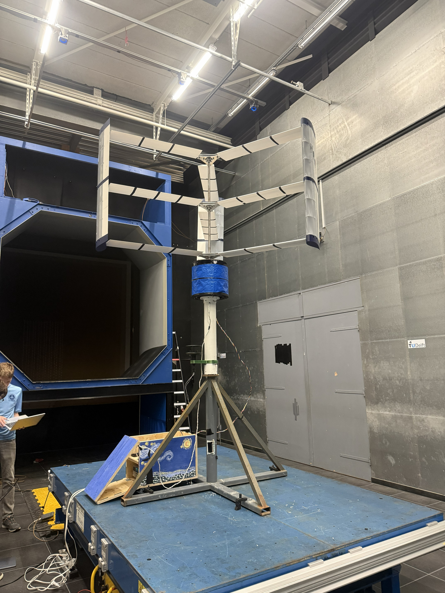

Vertical-Axis Wind Turbine
A six-foot turbine taken from computer-aided design and structural analysis through machining and assembly. I prototyped the actuator and shaft-braking subsystems, and in the wind tunnel it started delivering power at 4 m/s. The turbine you see spinning in the scene is this one.